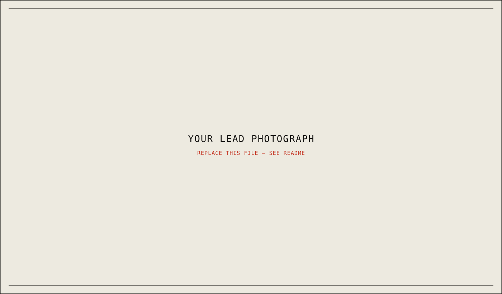

Case File No. 01What the light does to a room after everyone has left it.
A two-year field study of [your research subject] — how people, places, and objects hold the traces of the events that shaped them. This site collects the photo essay, the people behind the project, and the full research paper in one place.
Start here